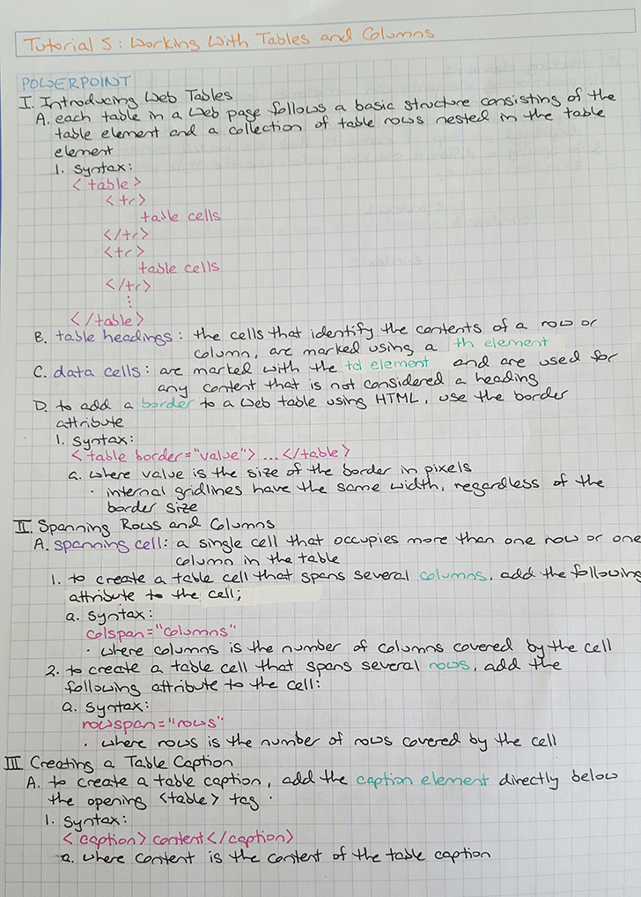
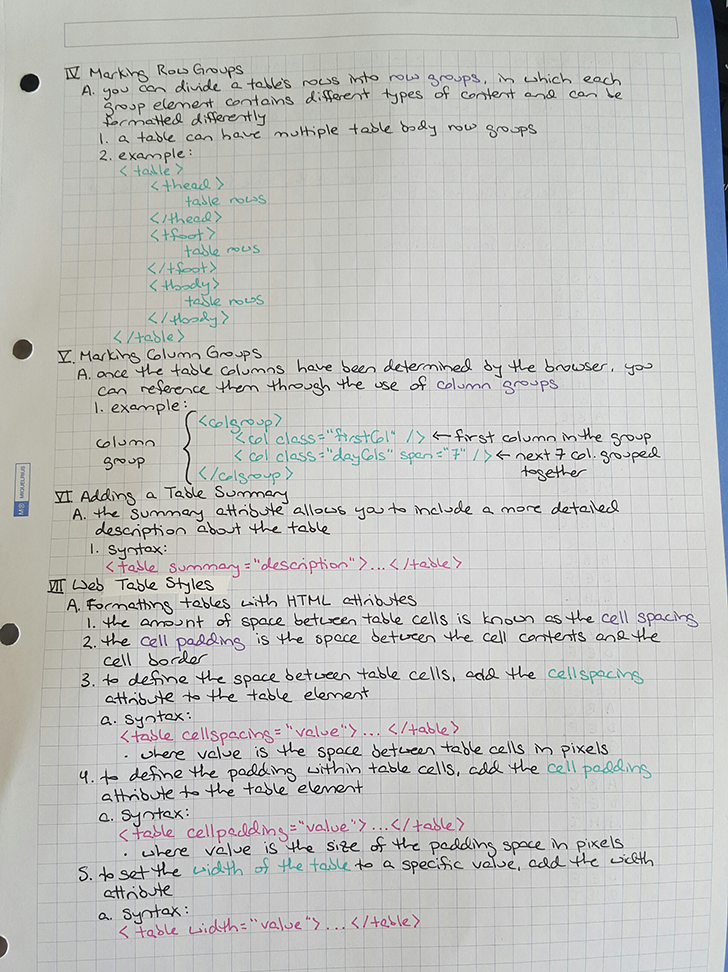

My notes are a bit of a hybrid. I tend to use a basic outline format, complete with Roman numerals, letters, and numbers. However, I am also a visual learner and have found that using specific colors helps draw my eye to various points. I use orange for the heading of my notes, blue to indicate what I am taking notes on, pink when I'm writing down the basic syntax of something, green to highlight a key word(s) or show an example, and purple when I am defining something.
I have found that this method is extremely useful in anything from history class, to AutoCAD classes, to programming language classes. By using colors in addition to black ink your eye is able to quickly locate the information you need.
One last thing that I have found when taking notes is that good quality supplies are extremely useful.
The Supplies I Use Daily:
Some samples of my notes can be seen here:
 